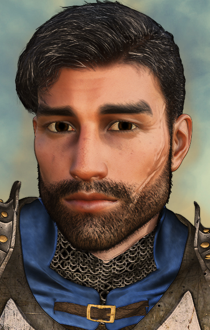

Unzip the folder "c#brage" and the "setup-c#brage.exe" into your game folder (BG:EE/SOD/BG2/BGT/BGII:EE/EET) directory. Double click the "setup-c#brage.exe" and follow the instructions onscreen. Make sure the game is not running while installing the mod.
The mod introduces a quest extention to the Brage quest in the game (BG1). Brage is the captain of the Nashkel guard and went missing after killing his family. The quest extention to prove his innocence was originally published as the component "Brage's Sword" in the mod
bgqe.
To gain Brage as a joinable NPC, the PC needs to prove his innocence as well as give him back his real sword. After leaving the temple once after that, Brage can be visited inside the temple of Helm in Nashkel and will offer to join the PC.
The quest to make Brage a joinable NPC can be completed before clearing the Nashkel mines. See the spoiler section for information.
This content gives the player the possibility to prove that Brage fell victim to an intrigue and save him from a death by the gallows - if the PC wants to. There is an evil quest option, which will bring Brage to the gallows (i.e. he will be gone from the game). In this case, he will not be available as a joinable NPC.
Brage has to be brought to Nashkel alive. The mod also adds the possibility to bring him to Oublek (i.e. the Nashkel authorities) instead of to the temple. This was unfinished original game content. (For this possibility, please note the install order as mentioned above).
BG1:
After proving his innocence, bringing him his sword, and leaving the temple once - representing the time that passes so Brage can come to terms with what happened - Brage will ask to join the PC's group to both repay them and also to be part of bringing the culprits of the intrigue to justice. He doesn't have to be accepted right away but can also be recruited later.
The BG1 part contains a friendship path with 11 dialogues, dealing with Brage's guilt and the loss of his family. The friendship path is best suited for a caring, friendly PC. Brage banters with some of the BioWare NPCs. As of version Beta 1, the mod includes banters for Brage with the following NPCs: Ajantis, Eldoth, Garrick, Imoen, Minsc & Dynaheir, Montaron, Viconia, Xzar, Yeslick. There are dialogues with interjections of Edwin, Jaheira, and Khalid, also. Brage reacts to the main game events. He has a lot of interjections in Nashkel as he is well-known in the town. As of version Beta 1, there are no other interjections to game events. Brage has s small player initiated dialogue (PID) which will not be updated throughout BG1.
To experience all banters with Eldoth and Viconia, most cursed items should be identified and placed in the group's inventory.
After 2/3 of the friendship path, Brage will tell that he wants to visit his family's grave in Nashkel. The PC does not have to be with him while it happens, but more content will be witnessed if they do (otherwise, Brage will talk about it upon rejoining).
SoD:
As of version Beta 1, there is no SoD content yet. Brage will remain in the group and can be taken along until he is kicked out.
BGII:
As of version Beta 1, there is no official BGII content yet. There exists some BGII content which is not translated to German:
Brage will be inside the temple of Helm in the Temple's District after the PC received the quest for the Unseeing Eye from one of the temples. The quest has to be accepted for Brage to spawn. After that, he can be taken into the group.
In ToB, Brage can be summoned via the Fate spirit if he is not in party upon the transition from SoA.
As of version Beta 1, Brage has banters with Anomen and Nalia.
When first met, he will be a third level fighter with two pips in two-handed sword, two pips in crossbow, and one pip in two-handed fighting style. Brage will level up upon first joining when the PC's HP are higher than his. This will also happen in a continuous game upon rejoining after game-related times of separation at the beginning or SoD, SoA, and if summoned in ToB via the fate spirit.
Brage's alignment was changed to Lawful Neutral. (The original game cre had Chaotic Neutral which I think was meant to be due to the berserker rage he is in when met.)
His stats where taken from the original BG1 creature file:
- STR: 18/23
- DEX: 11
- CON: 17
- INT: 12
- WIS: 8
- CHA: 13
For the English version, Brage uses the soundset "HoW_Male_2" from IWD:TotLM.
Brage's portrait was generously created and provided by Acifer.

***** Spoiler for the BG1 Beginnings Quest *****
The merchant Borda (original game content) plays a role in this quest. Originally, he can be met in the area with the Xvart village. Depending on quest status the PC can confront him here. If he was already met, there will be a second meeting.
Brage's cursed sword plays a role, as well. It has to be presented to Nalin at some point. After that, it is no longer needed for this mod (and can e.g. be used for Thalantyr's Item Upgrade Mod).
The quest can be solved completely before clearing the Nashkel mines but it can also be solved later.
For the quickest way of solving the quest (especially before going into the mines), the walkthrough is as follows:
- On the map with the Xvart village, talk to the merchant Borda. For the quickest way, you can confront him and kill him to get the needed note and Brage's real sword. This is not necessary to solve the quest before the Nashkel mines, though.
- Go to Brage. If Borda is not killed, let Laryssa live to be able to solve the quest before clearing the Nashkel mines. Bring Brage to Nashkel alive (either to the temple or to Oublek does not matter)
- Talk to Oublek and receive the quest "Captain Brage's Guilt".
- Show the cursed two-handed sword to priest Nalin in Nashkel temple to prove it is cursed.
- If Borda was not killed yet, meet Laryssa outside the temple and receive a clue about a merchant at the Nashkel Carnival. He is located in the tent far south.
- Tell Oublek about the cursed sword.
- If Borda is still alive, go to the potions merchant at the Nashkel Carnival (far south tent) and confront him with the accusations until he tells where to meet Borda.
- Search for Borda. If not met yet, he will be in the area with the Xvart village. If already met there, go into the Lotus tent in the far west of the Carnival once. Upon leaving the tent, Borda will confront the group. Take the letter and the sword after defeating him.
- Give Oublek the letter to prove Brage's innocence.
- Talk to Oublek again to trigger the Brage's trial cutscene.
- After clearing his name, Brage will be inside the temple in Nashkel. Persuade him to take his real sword.
- After Brage took his sword and the PC left the temple once and returns, Nalin will address the PC that Brage wants to speak with them. Brage will ask to join and can be taken into the group.
Note: For the case that the merchant Borda was not killed upon the first meeting but Laryssa, Brage's cousin, was killed upon the first confrontation, the last needed quest clue will be found no sooner than Tazok's tent in the bandits' camp.
This mod is unofficial Fan Content permitted under the Fan Content Policy. Not approved/endorsed by Wizards. Portions of the materials used are property of Wizards of the Coast. ©Wizards of the Coast LLC.
This mod is also not developed, supported, or endorsed by BioWare, Black Isle Studios, Interplay Entertainment Corp., Overhaul Games or Beamdog. All other trademarks and copyrights are property of their respective owners.
Version Beta 3:
- Installation after bgqe should work in all cases now.
Version Beta 2:
- Soldier Hick inside the barracks should no longer approach the PC if Brage was brought in.
- If Brage was brought to the temple, Nalin will give a hint that the PC should talk to Oublek to proceed.
- If Brage was brought to Oublek, he will initiate dialogue to proceed the quest.
- After Brage accepted his real sword, there is no timer. The PC needs to leave the temple once. Upon return, Brage will ask to join the group.
Version Beta 1:
- First public release with BG1 content.